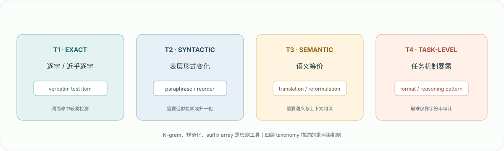
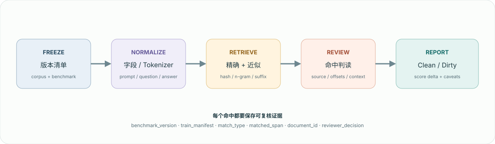

MODULE 13 / LLM DATA ENGINEERING
评测集去污染
从 GPT-3 n-gram 到 Llama 2 token-level matching，构建可复核的训练–评测集污染检测与报告。
如果训练语料包含了评测题目、答案、题目来源或高度相似的改写，模型的评测成绩还代表“未见过的新任务”吗？去污染的目标是发现并透明报告重叠风险，而不是把任何共同短语都当成作弊证据。
污染不是单一的二元标签
至少要区分三件事：训练–测试文本重叠（是否出现相同字符串）、任务信息泄漏（是否暴露问题、答案或解题模板）、以及评测收益归因（重叠是否真的让模型分数提高）。2026 年 GEM 系统综述提出 T1 Exact、T2 Syntactic、T3 Semantic、T4 Task-Level 四层污染 taxonomy。注意：n-gram、规范化和 suffix array 是检测机制，不是这四种污染层级本身。检测到重叠并不自动证明模型记住了答案；反过来，没有检测到精确字符串，也不能证明不存在语义层面的泄漏。

把“污染率”写成可复核的定义
一种 token-level 定义是：若评测样本中的 token 至少参与一个达到规则长度的训练集匹配片段，则该 token 标记为 contaminated。样本污染比例为：
这只是某种可操作定义。必须同时记录 tokenizer、字段拼接方式、最小 n-gram 长度、允许的编辑/跳词预算、常见短语过滤规则和训练数据版本。否则不同团队报告的“污染率”不可直接比较。
两种经典做法：GPT-3 与 Llama 2
GPT-3：保守的 n-gram overlap
GPT-3 论文的 Appendix C 说明：过滤阶段使用 13-gram（小写、按空白切分并去标点）查找重叠；为降低常见短语造成的误报，忽略在超过 10 个训练文档中出现的 13-gram。评测分析中，n 值按样本长度的第 5 百分位设置，并限制在 8 到 13 之间；作者使用 Spark 计算精确碰撞。
更重要的是，论文明确指出该方法可能产生 false positives。例如 SQuAD 的背景段落可能来自 Wikipedia，但问题/答案并未出现在训练数据里。GPT-3 团队因此检查 clean subset 的评测表现，而不是把每次字符串命中都视为答案泄漏。
Llama 2：对实际输入做 token-level 匹配
Llama 2 论文强调，应把完整 verbalized evaluation sample 按模型 tokenizer 编码，再在 token 空间检测长度超过 10 的 n-gram；允许最多 4 个位置的 skipgram 差异，并按样本中受影响 token 的比例分层。论文中 clean / dirty 的 20% 和 80% 分界是该研究用于构造高置信子集的实验定义，不是通用行业阈值。
可落地的去污染流水线

- 冻结输入：保存训练语料 manifest、数据版本、benchmark split、发布时间和评测 prompt 模板。
- 统一表示：分别保留原始文本、规范化文本和目标模型 tokenizer token；不要只存一个丢失上下文的归一化字符串。
- 分级检索：先 exact hash，再做 n-gram / suffix-array / MinHash 候选；近似检索结果必须回到原文核验。
- 字段审查：分别标记题干、选项、答案、解释、背景材料和 prompt 模板是否命中。
- 报告评测影响：比较全量、低污染和高污染样本的成绩，同时检查这些子集是否难度分布不同。
最小可检查实现：N-gram 命中比例
def word_ngrams(text, n):
words = normalize_to_lowercase_words(text)
return set(tuple(words[i:i+n]) for i in range(len(words)-n+1))
def overlap_ratio(eval_text, train_index, n=13):
grams = word_ngrams(eval_text, n)
if not grams:
return 0.0
matched = grams & train_index
return len(matched) / len(grams)
# This is a candidate-overlap rate, not proof of answer leakage.
# Keep matched spans and source document IDs for human review.上面是教学伪代码：集合交集会丢失重复出现次数和 token 位置，不能直接替代论文的 token-level contamination 算法。生产实现应使用倒排索引或 suffix array，并输出每个命中的偏移和文档来源。
交互练习：Llama 2 研究中的 clean / dirty 分层
以下比例是合成教学样本。滑动污染比例，观察按论文口径构造的 clean（低于 20%）和 dirty（高于 80%）子集；中间区域不强行二分。
最大的陷阱：clean subset 也可能不是同一分布
- 热门背景知识更容易在网页语料中出现；这会让某些题目更容易被标记，即使答案未泄漏。
- 短 n-gram 和常见短语会产生碰撞；忽略高文档频率短语能降低误报，但可能漏掉广泛转载的内容。
- 只比较 clean 与 dirty 子集的分数，可能把难度、主题和来源差异误当作污染效应。
- 只检查题干可能漏掉答案或解题模板泄漏；只检查答案也可能把公开事实的自然重叠误判为泄漏。
- 语义改写和任务级泄漏需要检索、人工判读和额外的评测设计，不能由 n-gram 指标单独解决。
参考资料
- Brown et al. (2020), Language Models are Few-Shot Learners，§4、Appendix C。
- Touvron et al. (2023), Llama 2: Open Foundation and Fine-Tuned Chat Models，Appendix contamination analysis。
- Lee et al. (2022), Deduplicating Training Data Makes Language Models Better，exact substring 与 approximate document matching。
- Nourbakhsh et al. (2026), Are LLM Benchmarks Already Contaminated? A Systematic Review of Contamination Detection Methods，GEM 2026 Outstanding Paper。